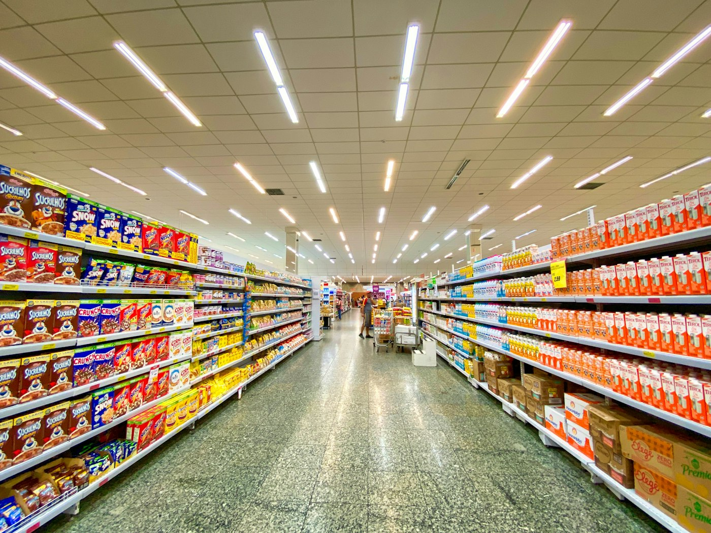

01
Farmacias
Reposición de lo que rota en mostrador. En esta ruta solo entra venta libre, aparte de lo que el médico receta.
Tres puertas, el mismo surtido
No vendemos una caja al paciente. Reponemos el anaquel del negocio que vive de esa venta. La venta al público la hace el mostrador.
01
Reposición de lo que rota en mostrador. En esta ruta solo entra venta libre, aparte de lo que el médico receta.

02
El espacio corto del anaquel. Piezas de venta libre que la gente ya pide cuando pasa por el pasillo.
03
Abarrotes, misceláneas y locales de barrio. Un pedido claro, para no llenar la trastienda de más.
Lo que no se negocia

Esta ruta no lleva medicamentos de receta. Si una presentación pide receta, no entra al pedido.

El surtido es la línea Genomalabs. No revolvemos otras marcas en la misma caja.

Caja cerrada, como sale del empaque. Así llega al negocio y así se pone en el anaquel.

El que recibe puede ver lote y fecha. Lo que está corto de fecha no se manda a reponer mostrador.